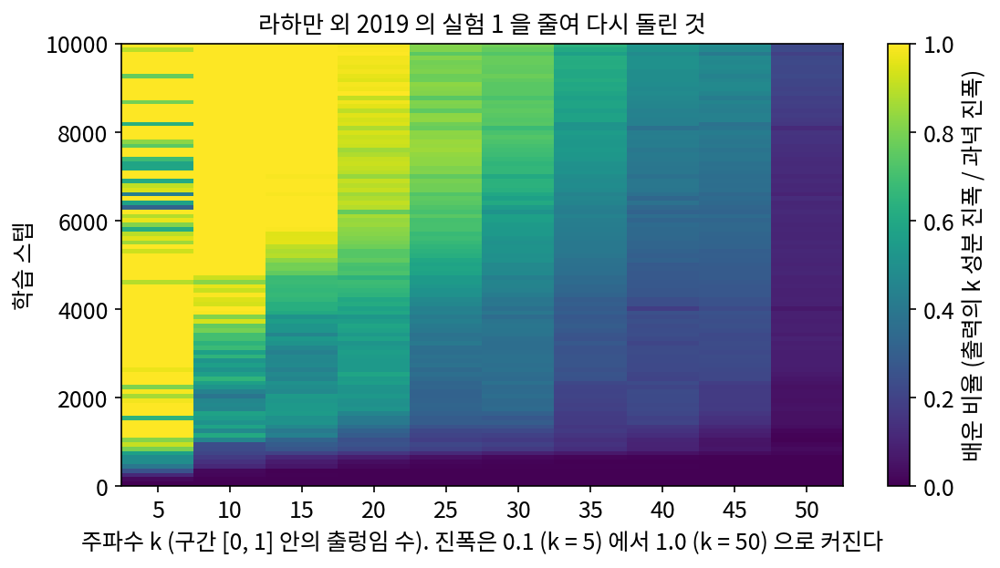
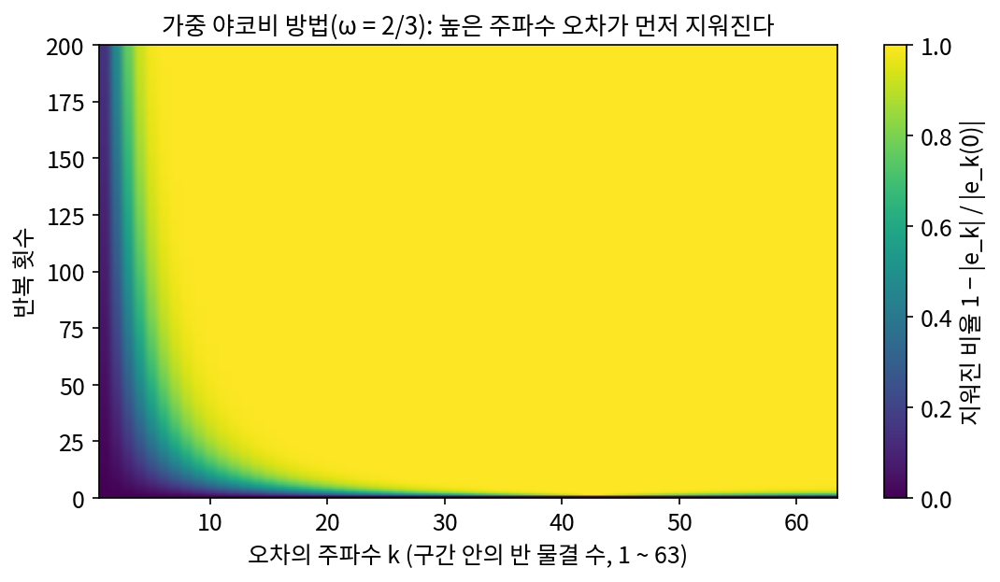
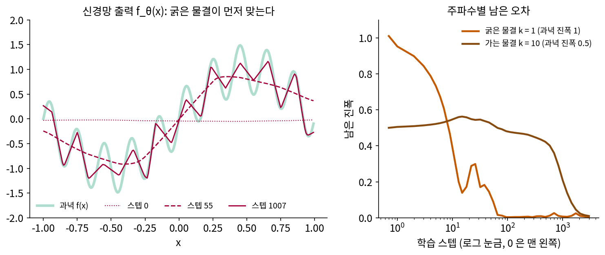
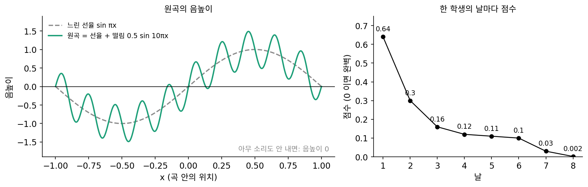
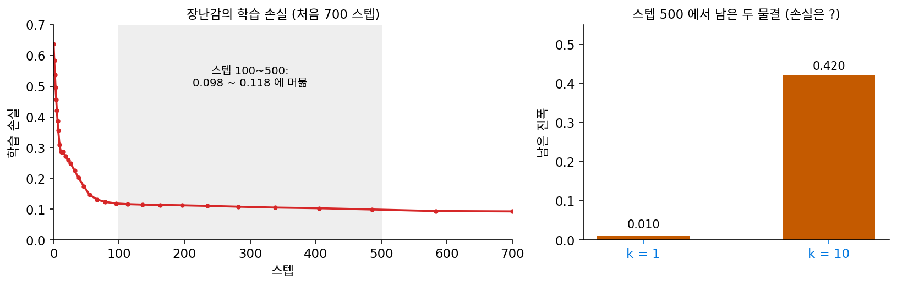
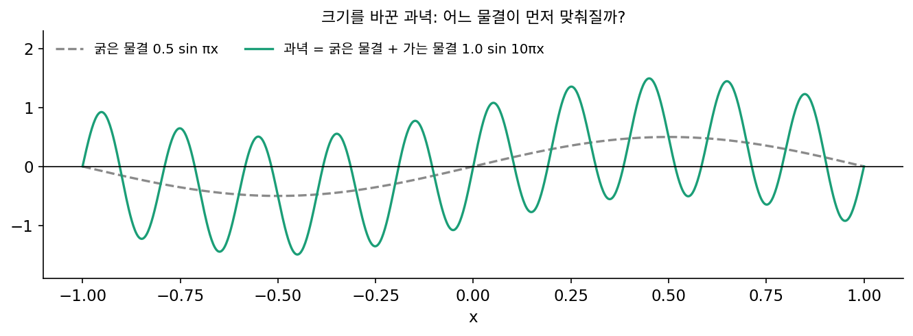

스펙트럼 편향: 신경망은 굵은 무늬부터 배운다
이 장의 물음
지금까지는 사람이 축을 골랐다. 신호를 사인·코사인 물결로 다시 적으면 계수 몇 개로 줄어들었고, 평행이동에 변하지 않는 커널 함수는 물결마다 세기 하나로 적혔다. 그런데 신경망에게 신호를 맡기면 망은 어떤 순서로 그 신호를 배울까? 신경망은 어떤 연속 함수든 원하는 만큼 가깝게 흉내 낼 수 있다는 정리가 있으니, 순서 같은 것은 없고 학습이 끝나면 다 맞춰지는 것일까?
2020년, 여러 방향에서 찍은 사진으로 3차원 장면을 배우는 NeRF 를 만든 연구자들은 공간의 좌표 (x, y, z) 를 그대로 신경망에 넣었더니 그림이 지나치게 매끈해졌다고 적었다. 레고로 만든 불도저 장면에서 가는 무늬와 모양이 뭉개진 것이다. 망의 크기와 학습 방법은 그대로 두고 좌표를 사인·코사인 여러 개로 펴서 넣자 같은 망이 가는 무늬까지 그려 냈다. 같은 정보를 넣었는데 왜 결과가 달랐을까? 그리고 언어 모델과 디퓨전 모델이 자리 번호와 타임스텝을 사인·코사인으로 펴서 넣는 것도 그래서일까?
이 장은 다음 물음에 차례로 답한다.
- 굵은 물결과 가는 물결을 더한 함수를 신경망에게 맞추게 하면, 두 물결은 같은 스텝 수 안에 맞춰질까?
- 한쪽이 먼저 맞는다면, 무엇이 그 순서를 정할까? 경사하강이 어떤 방향부터 오차를 줄이는지와 관계가 있을까?
- 좌표를 사인·코사인으로 펴서 넣는 일은 그 순서를 어떻게 바꿀까? 물결을 많이 넣을수록 좋을까?
- 트랜스포머의 위치 벡터, RoPE(자리 번호만큼 벡터를 돌려 위치를 알리는 방법), 디퓨전 모델의 시간 넣기도 같은 일일까? 학습 때보다 긴 글을 넣으면 무엇이 어긋날까?
스펙트럼 편향: 굵은 물결이 먼저 맞는다
구간 [−1, 1) 위의 함수 하나를 신경망에게 맞추게 해 보자. 굵은 물결 sin πx(구간 안에서 한 번 출렁인다)에 가는 물결 0.5 sin 10πx(열 번 출렁인다)를 더한 함수다. 망은 입력 x 하나를 받아 숫자 하나를 내놓고, 학습 점에서 정답과의 차이 제곱을 줄이도록 스텝마다 파라미터를 고친다. 망의 손실은 숫자 하나로 줄어들 뿐이라서, 그 안에서 굵은 물결과 가는 물결 가운데 어느 것이 먼저 맞춰지는지는 손실만 봐서는 모른다. 스텝마다 남은 오차를 물결로 나눠 보면 무엇이 보일까?
역사: 신경망은 반복 풀이법과 거꾸로 간다
2017년 무렵, 파라미터가 데이터보다 훨씬 많은 신경망이 아무렇게나 붙인 정답까지 외울 수 있다는 실험이 알려지면서 물음이 하나 생겼다. 무엇이든 외울 수 있는 망이 왜 실제 데이터에서는 외우지 않고 쓸 만한 규칙을 찾을까? 라하만(Nasim Rahaman)과 벤지오(Yoshua Bengio), 쿠르빌(Aaron Courville) 등 여덟 명은 이 물음을 주파수로 따졌다. 그들은 2019년 국제기계학습학회(ICML)에 낸 「신경망의 스펙트럼 편향에 대하여(On the Spectral Bias of Neural Networks)」에서 [0, 1] 위의 점 200개에 주파수 5, 10, …, 50 인 사인 물결 열 개를 더한 함수를 망에게 맞추게 했다. 망은 6층 폭 256 의 ReLU 망(음수를 0 으로 바꾸는 꺾은선 함수를 층마다 쓰는 망)이었고, 100 스텝마다 망의 출력을 이산 푸리에 변환해 주파수마다 얼마나 배웠는지를 그렸더니, 낮은 주파수가 먼저 배워졌다. 높은 주파수일수록 진폭을 크게(0.1 에서 1.0 까지) 주어 「높은 주파수를 먼저 배울 이유」를 일부러 만들어 준 실험에서도 순서는 바뀌지 않았다. 아래 그림은 그 실험을 줄여서 다시 돌린 것이다. 진폭 0.1 인 주파수 5 는 900 스텝에 과녁의 90% 를 넘게 배웠고, 진폭 0.4 인 주파수 20 은 6400 스텝이 걸렸으며, 진폭 1.0 으로 가장 큰 주파수 50 은 1만 스텝 뒤에도 22% 만 배웠다.

비슷한 때 쉬즈친(Zhi-Qin John Xu)과 동료들은 2018년 7월 arXiv 에 올린 「주파수 영역에서 본 깊은 신경망의 학습」에서 같은 현상을 「주파수 원리」라고 불렀다. 이듬해 1월에 올린 글에서 그들은 이 순서가 수치해석의 오래된 반복 풀이법과 반대라는 점을 짚었다. 커다란 연립방정식을 반복으로 푸는 흔한 방법들(그들이 견준 것은 야코비 방법이다)은 높은 주파수의 오차를 먼저 지우고 낮은 주파수의 오차를 오래 남긴다. 신경망은 거꾸로 낮은 주파수부터 맞춘다. 그들은 망이 낮은 주파수부터 맞추기 때문에 실제 데이터에서 잘 일반화하는 면이 있고, 같은 이유로 이웃한 입력의 답이 마구 뒤바뀌는 문제(비트의 홀짝 맞히기 같은)는 어려워한다고 보았다.


망의 출력을 100 스텝마다 이산 푸리에 변환해서 그린 거면, 지금은 FFT 한 줄이잖아요. 그게 왜 2019년에야 논문이 됐어요?

변환은 그때도 한 줄이었어요. 어려웠던 건 무엇을 변환할지였죠. 망이 실제로 다루던 데이터를 떠올려 봐요. 사진을 분류하는 망이라면 입력이 몇 차원이죠?

사진 한 장이 칸 수천 개니까 수천 차원이요. 음, 그 공간에 고른 칸을 깔 수가 있나… 한 축에 열 칸만 둬도 칸 수가 10 의 수천 제곱이네요. 칸이 없으면 이산 푸리에 변환도 못 하고요.

그래서 앞의 실험은 [0, 1] 위 점 200개였어요. 입력이 1차원이고 점이 고르게 놓여 있으면 망의 출력을 그대로 이산 푸리에 변환할 수 있어요.

그래도 순서를 본 것까지죠. 왜 낮은 주파수가 먼저인지는요? 쉬즈친 팀도 야코비 방법과 거꾸로라고만 했잖아요.
야코비 방법은 반복 한 번이 오차를 어떻게 바꾸는지 행렬 하나로 적을 수 있어서, 어느 주파수가 먼저 지워지는지 계산이 돼요. 넓은 망의 학습 한 스텝을 그렇게 행렬 하나로 적는 신경 탄젠트 커널은 2018년에 막 나왔고, 그것으로 주파수마다 속도를 셈한 것은 이듬해였어요.

그럼 우리도 순서부터 직접 봐야겠네요. 굵은 물결 하나와 가는 물결 하나만 넣은 과녁에서 남은 오차를 스텝마다 물결로 나누면, 어느 쪽이 먼저 줄어드는지 보일까요?
굵은 물결과 가는 물결을 작은 망으로
처음의 함수로 직접 해 보자. 과녁은 아래 함수이고, 학습 점은 구간을 128칸으로 고르게 나눈 점 x = −1, −1 + 1/64, …, 1 − 1/64 이다. 망은 폭 128 인 은닉층 셋을 쌓은 ReLU 망이고, 학습 점 128개 전체로 Adam(파라미터마다 스텝 크기를 따로 맞추는 경사하강의 한 변형, 학습률 0.001)을 3000 스텝 돌렸다(씨앗 0).
스텝마다 학습 점 128개에서 남은 오차 r을 이산 푸리에 변환으로 물결로 나누고, 주파수 k(구간 안에서 출렁이는 수)마다 그 물결의 진폭을 읽는다. 과녁의 두 물결이 하나도 맞춰지지 않았다면 k = 1 에 진폭 1, k = 10 에 진폭 0.5 가 남아 있어야 한다.
| 스텝 | 남은 진폭 k = 1 | 남은 진폭 k = 10 | 학습 손실 |
|---|---|---|---|
| 0 | 1.010 | 0.500 | 0.637 |
| 50 | 0.102 | 0.526 | 0.161 |
| 100 | 0.002 | 0.480 | 0.118 |
| 500 | 0.010 | 0.420 | 0.098 |
| 1000 | 0.006 | 0.211 | 0.033 |
| 2000 | 0.002 | 0.027 | 0.0017 |
| 3000 | 0.005 | 0.010 | 0.0010 |
굵은 물결은 100 스텝 만에 진폭 0.002 만 남기고 다 맞춰졌지만, 같은 100 스텝 동안 가는 물결은 0.500 에서 0.480 으로 거의 그대로였고 처음 몇십 스텝에는 오히려 0.547 까지 커지기도 했다. 가는 물결이 과녁 진폭의 10%(0.05) 아래로 내려간 것은 1699 스텝째로, 굵은 물결이 같은 기준(0.1 아래)에 닿은 54 스텝째의 31배쯤 늦다. 씨앗을 0 에서 4 까지 바꿔도 가는 물결은 1472~2433 스텝, 굵은 물결은 48~61 스텝으로 순서는 같았다.

이렇게 신경망이 오차의 낮은 주파수 성분을 먼저 줄이고 높은 주파수 성분을 늦게 줄이는 경향을 스펙트럼 편향 (낮은 주파수부터 배우는 경향 / spectral bias)이라 한다. 여기서 「편향」은 망이 고를 수 있는 답 가운데 어느 쪽으로 기우는지를 가리키는 말이고, 통계에서 표본평균이 참값에서 벗어나는 정도를 부르는 「편향」(추정량의 bias)과는 다른 뜻이다. 망에게 가는 물결을 그릴 힘이 없는 것은 아니어서, 3000 스텝이면 둘 다 맞췄지만, 굵은 무늬를 먼저 그리고 가는 무늬는 오래 걸린다.
ML에서: 좌표를 넣는 망은 그림을 뭉갠다
좌표를 넣고 색이나 밀도를 받는 망에서는 스펙트럼 편향이 그림으로 드러난다. NeRF 논문(밀든홀 외 2020)은 공간의 점 (x, y, z) 와 보는 방향을 그대로 넣은 망이 「색과 모양의 높은 주파수 변화를 잘 나타내지 못했다」고 적고, 이를 라하만 외의 스펙트럼 편향으로 설명했다. 줄여 보는 실험의 표에서도 좌표를 펴는 일을 뺀 판은 보는 방향을 뺀 판과 함께 가장 크게 나빠졌고, 그림은 「지나치게 매끈해진」 모습이었다. 사진의 가는 결은 높은 주파수 물결이므로, 망이 그것을 배우기 전에 학습이 끝나거나, 배우는 데 스텝이 너무 많이 든다. NeRF 가 스펙트럼 편향을 어떻게 피했는지는 좌표를 물결로 펴서 넣는 방법에서 본다.
문제 1. 노래 연습 앱의 점수
노래 연습 앱이 녹음을 원곡과 견줘 매기는 점수는 「(내 음높이 − 원곡 음높이)² 의 평균」이고 0 이면 완벽하다. 원곡의 음높이는 느린 선율 sin πx(크기 1)에 빠른 떨림 0.5 sin 10πx(크기 0.5)를 더한 것이다. (가) 아무 소리도 내지 않으면(음높이 0) 점수는 얼마인가? (나) 선율은 완벽하게 따라 하고 떨림은 하나도 못 내면? 떨림만 완벽하고 선율을 못 따라 하면? (다) 한 학생의 날마다 점수가 0.64, 0.30, 0.16, 0.12, 0.11, 0.10, 0.03, 0.002 였다. 넷째·다섯째 날에는 무엇을 연습하고 있었다고 짐작할 수 있는가?

(가)는 원곡 전체를 틀린 거니까, 크기 1 하고 0.5 를 더해서 1.5 의 제곱, 2.25 요.
sin πx 가 구간 안에서 늘 1 인가요? 제곱의 평균을 내 보면요?

아, 오르락내리락하죠. sin² 의 평균은 1/2 이니까 선율만이면 1²/2 = 0.5, 떨림만이면 0.5²/2 = 0.125 예요. 둘을 같이 틀리면… 0.5 + 0.125 = 0.625 인가요? 곱하는 항이 남지 않나요?

2 × sin πx × 0.5 sin 10πx 의 평균은 0 이야. 출렁이는 수가 다른 두 물결은 직교하니까 곱해서 평균 내면 지워져. 그래서 (가)는 0.625 고, (나)는 떨림만 틀리면 0.125, 선율만 틀리면 0.5.
(다)는요?
0.12, 0.11 로 이틀 머문 게 눈에 띄어요. 어느 값이랑 가깝더라… 0.125 예요.

0.125 면 떨림만 틀렸을 때잖아.

응. 선율은 맞췄는데 떨림은 아직 거의 못 내는 상태야.
반대 순서였을 수도 있을까요?
점수가 0.5 근처에 머문 날은 없으니까, 떨림부터 익히고 선율을 나중에 맞춘 건 아니에요.

망을 학습할 때 손실이 0.12 근처에서 한동안 안 내려가던 것도 같은 거겠네요. 조교님이 제 과제 점수가 한동안 그대로라고 할 때, 사실은 쉬운 문제는 다 맞고 어려운 문제 하나에서 막혀 있던 거랑 같아요.
문제 2. 손실이 머문 자리에서 남은 물결 읽기
위 장난감에서 학습 손실은 스텝 100 에서 500 사이 내내 0.098 에서 0.118 사이에 머물렀다. (가) 손실이 머문 값만 보고, 남은 오차가 어떤 물결인지 말할 수 있는가? 학습 점 128개 위에서 sin πx 와 sin 10πx 의 곱의 평균은 얼마인가? (나) 스텝 500 에서 남은 진폭은 k = 1 이 0.010, k = 10 이 0.420 이었다. 두 물결만 남았다고 보면 손실은 대략 얼마인가? 실제 손실 0.098 과 비교하라. (다) 남은 진폭이 같은 0.420 이어도 그 물결의 시작 자리(위상)가 달랐다면 손실은 달라지는가?

(가)는 문제 1 이랑 같으니까 0.125 근처면 가는 물결이 남은 거요. 곱의 평균은 계산해 보면 0 이에요. 학습 점 128개 위에서도요.
점 128개는 연속인 구간이 아니에요. 그런데도 왜 0 이 될까요?
칸 위에서도 직교하려면 조건이 있을 텐데… 출렁이는 수가 1 과 10 이고, 128칸의 절반인 64 보다 작아.
64 는 왜 나와?
출렁임 수가 64 를 넘으면 칸 위에서 낮은 물결로 둔갑하잖아. 그 아래면 칸으로 적은 물결끼리도 직교해. 이산 푸리에 변환의 축들이 서로 직교하는 거랑 같은 말이야.

(나)는 0.010²/2 + 0.420²/2 = 0.00005 + 0.0882 = 0.088 이에요. 실제는 0.098 이니까 0.01 쯤 모자라네요.
모자란 0.01 은 어디 있을까요? 표에 적은 건 두 주파수뿐이었죠.
다른 주파수에도 조금씩 남은 게 있어서예요. 스텝 500 에서 나머지 주파수 가운데 가장 큰 진폭이 0.053 이었어요. 그런 게 여럿 모이면 0.01 이 되겠네요. 손실은 주파수마다의 진폭 제곱의 절반을 다 더한 거고요.
(다)는 위상이 달라도 손실은 같아. 사인이든 코사인이든 진폭이 같으면 제곱의 평균이 같으니까. 손실은 주파수마다의 「크기」만 보고 「시작 자리」는 안 봐. 기저를 돌려도 길이는 그대로라는 파스발 등식을 수업에서 증명할 때는 이렇게 쓸모 있는 줄 몰랐어.
문제 3. 가는 물결이 더 크면
과녁의 크기를 바꿔 굵은 물결을 0.5 sin πx, 가는 물결을 1.0 sin 10πx 로 했다. 같은 망, 같은 학습으로 씨앗 0…4 를 돌린다. (가) 손실을 가장 빨리 줄이려면 어느 물결부터 맞추는 것이 이득인가? (나) 실제로 각 물결이 과녁 진폭의 10% 아래로 내려간 스텝은 어떤가? (다) (나)의 스텝 수로 「망은 손실을 가장 많이 줄이는 물결부터 배운다」는 설명이 맞는지 따져라.

(가)는 문제 1 처럼 계산하면 가는 물결을 틀린 값이 1.0²/2 = 0.5, 굵은 물결은 0.5²/2 = 0.125 니까, 가는 물결부터 맞추면 손실이 훨씬 빨리 줄어요. 경사하강은 손실이 가장 빨리 줄어드는 방향으로 가니까 이번엔 가는 물결이 먼저겠죠.
돌려 본 결과를 볼까요?

씨앗 0 에서 진폭 0.5 인 굵은 물결은 37 스텝 만에 10% 아래로 내려갔고, 진폭 1.0 인 가는 물결은 1568 스텝이 걸렸어요. 스텝 200 에서도 가는 물결은 0.892 가 남아 있었고요. 다섯 씨앗 모두 굵은 물결이 33~43 스텝, 가는 물결이 1568~2939 스텝이에요. 손실을 더 많이 줄여 주는 가는 물결이 오히려 마흔 배쯤 늦어요.
민준 학생은 경사하강이 손실이 가장 빨리 줄어드는 방향으로 간다고 했죠. 무엇을 움직이면서 잰 「방향」이었나요?
파라미터요. 「파라미터 공간에서」 가장 빨리 줄어드는 방향이에요. 오차를 물결로 나눈 공간에서 가장 큰 물결을 지우는 방향과 같다는 보장은 없어요.
둘이 왜 달라? 결국 같은 손실이잖아.
파라미터를 조금 움직였을 때 출력이 어떤 모양으로 바뀌기 쉬운지가 끼어들 테니까.

그래요. 라하만과 동료들이 높은 주파수의 진폭을 일부러 크게 준 실험을 따로 한 것도 이것 때문이에요. 순서를 정하는 것은 물결의 크기가 아니라 망 쪽에 있는 무엇이에요. 망의 어떤 성질이 순서를 정하는지는 경사하강이 오차를 어느 방향부터 줄이는지를 보면 드러나요.

시험 공부할 때 배점이 큰 서술형부터 하라고들 하는데, 저는 결국 손이 익은 객관식부터 풀게 되는 거랑 비슷하네요.